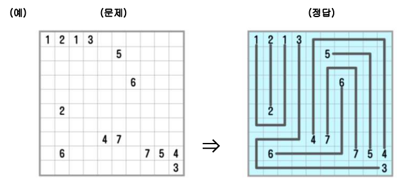

MATHEMATICAL LOGIC PUZZLE
넘버링크
Numberlink
격자 위의 같은 숫자를 선으로 잇고, 모든 빈칸을 하나의 막힘없는 경로로 가득 채우세요.
5×5 기본 격자부터 10×10 최고난도 격자까지 16개의 수학 퍼즐이 펼쳐집니다!
📐 16단계 점진적 난이도
✍️ 마우스 & 터치 드래그
🧩 100% 빈칸 채우기 퍼즐
📐 넘버링크 수학적 규칙
퍼즐을 완성하기 위해 지켜야 하는 3가지 핵심 논리 법칙입니다.
01
같은 숫자 연결
격자 위에 주어진 같은 번호의 두 숫자를 하나의 연속된 선으로 연결하세요. (예: 1은 1끼리, 2는 2끼리 연결)
02
직선의 불교차 원칙
선이 서로 교차하거나 분기해서는 안 됩니다. 즉, 격자의 작은 정사각형 하나는 단 한 번만 지나갈 수 있습니다.
03
완전한 빈칸 채우기 (전수 피복)
퍼즐이 완성되었을 때, 선이 그려지지 않은 빈칸이 단 하나도 있어서는 안 됩니다. 격자의 모든 칸(100%)을 완전히 채워야 정답으로 인정됩니다!
💡 문제 및 정답 예시 가이드

마우스 / 터치 드래그: 번호가 적힌 원을 누르고 이웃한 칸으로 드래그하여 선을 그립니다.
되감기 (Backtrack): 잘못 그었을 때는 드래그한 방향 반대로 되돌아가면 선이 자연스럽게 지워집니다.
되돌리기 & 초기화: 하단의 [되돌리기]로 직전 수를 취소하거나 [다시 시작]으로 보드를 비울 수 있습니다.
정답 확인: 모든 숫자를 잇고 모든 칸을 채운 뒤 [정답 확인] 버튼을 눌러 검증받으세요.
Stage 1
1 / 16
격자:
5 × 5
⏱️
00:00
연결:
0 / 5
채움:
0 / 25 (0%)
🎓
수학적 논리의 마스터
총 16개의 정교한 넘버링크 격자 퍼즐을 모두 완벽하게 해결했습니다!
16 / 16
완료한 스테이지
00:00
총 소요 시간
100%
격자 피복률